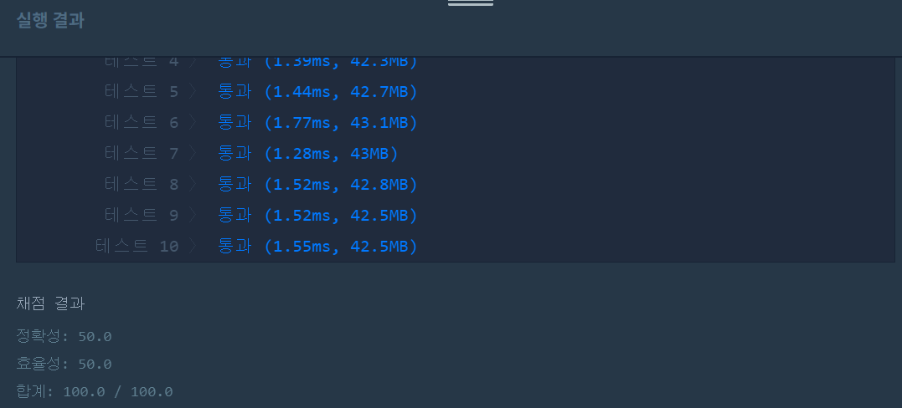
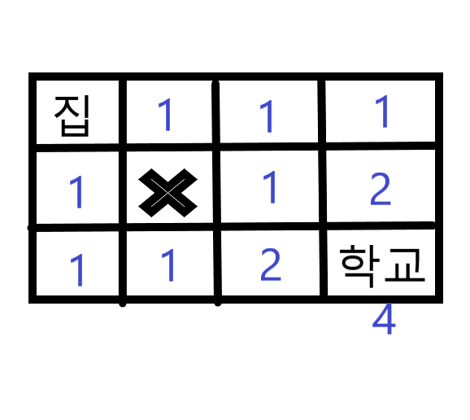

👀 문제
https://programmers.co.kr/learn/courses/30/lessons/42898
👊 도전
1. 설계
- 최단거리 구하는 방법을 적용한다.
2. 구현 (성공 코드)
import java.util.*;
/**
*
* @author HEESOO
*
*/
class Solution {
public int solution(int m, int n, int[][] puddles) {
int answer = 0;
int[][] route=new int[n][m];
for(int[] row:puddles){//웅덩이 설정
route[row[1]-1][row[0]-1]=-1;
}
route[0][0]=1;//시작값 초기화
for(int i=0;i<n;i++){
for(int j=0;j<m;j++){
if(route[i][j]==-1){//웅덩이는 0으로 변경
route[i][j]=0;
}
else{//웅덩이가 아니라면
if(i-1>=0){//왼쪽 값을 가져올 수 있다면
route[i][j]+=route[i-1][j]%1000000007;
}
if(j-1>=0){//위 값을 가져올 수 있다면
route[i][j]+=route[i][j-1]%1000000007;
}
}
if(i==n-1&&j==m-1){//목적지에 도착했다면
answer=route[i][j]%1000000007;
}
}
}
return answer;
}
}
3. 결과
 🤟 성공 🤟
4. 설명
- 최단거리 구하는 방법을 적용한다.
- 시작점을 포함한 행 열은 1로 초기화한다.
- 웅덩이는 -1로 표시한다.
- 현재 위치의 값은 왼쪽값+윗쪽값이다.
- 마지막에서만 1,000,000,007로 나누면 효율성 테스트에서 시간 초과가 난다.
- 마지막 행에서 여러 경로에 대한 결과값이 저장되므로 이들 중 최댓값이 answer이다.
- 정확한 이유는 잘 모르겠지만, 큰 값을 더하는 계속 더하는 것보다 그때그때 특정 값으로 나눈 나머지를 사용하여 값을 간단히 하는게 효율적이어서 그런게 아닐까 싶다.
👏 해결 완료!
문제 풀이법을 알면 코딩하는 것은 그렇게 어렵지는 않지만 그 풀이법을 생각해내는 것이 어렵다. 초등학교때 배운 이 방법을 기억하고 있지 않았더라면 이 문제를 해결하기 위해 얼마나 많은 시간을 투자했어야 할지..